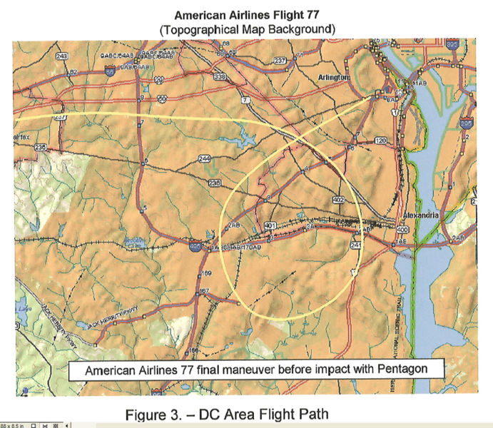

The Flight 77 loop - circular, triangular, multiangular or what?
Sunday, March 22, 2009

The above picture illustrates the final loop of Flight 77 according to the National Transportation & Safety Board (NTSB), which allegedly relies on military (RADES) radar data.
The statements of nine controllers from Dulles Airport (TRACON), published on my last blog entry http://911woodybox.blogspot.com/2009/03/dulles-airport-controllers-on-loop-of.htmlare still pending interpretation, which I'm going to deliver here. Needless to say, if the official Flight 77 loop is correct, it should match the controllers' accounts.
Here are the key results of my analysis:
1 - None of the controllers mentions the striking circular shape of the NTSB loop. You would expect the word "circle" or "circular" somewhere, but nil return. Quite the contrary, according to some controllers, the radar target was moving along a polygonal path, with corners and straight segments between the corners.
Robert Utley describes a triangular path with two sharp corners: "I observed a primary target approximately 7 miles east of AML, heading eastbound, when the target was about 1 mile west of DCA it made a right turn heading southwestbound. When it was about 3 miles north of DAA it made a sharp turn northbound, when it was about 10 miles east of AML it made a sharp turn eastbound, the target then dropped out of radar about 3 miles west of DCA. Equipment configuration was unknown to me."
James E. Walsh's path is a slight variation to Utley's, adding a corner and thus generating a quadrangle: The target proceeded to a point 1 mile west of Chrystal City and turned southwest to a point 5 miles northeast of DAA. It then made a right turn, 2 miles north of DAA, and proceeded northbound. 3 miles later the target turned northeastbound and shortly thereafter radar contact was lost.
William T. Howell also mentions a sharp turn: "The target went a few miles south of DCA and then made a sharp turn northbound, back in the direction of DCA."
Robert Devery mentions several turns, too, and stresses that, after turning south, "for a few miles, it continued south.", implying that the target moved straight south for a while.
2 - The position data of some accounts are absolutely incompatible with the NTSB loop:
Todd Lewis locates the target east of the Potomac: "The target went just south of the White House then turned southeast and disappeared."
Robert J. Brickley: "The aircraft proceeded to a point approximately 8 miles southwest of P-56, made a right 360 degree turn". The starting point of the NTSB loop is located 4 miles (not 8) southwest of P-56.
Robert Utley claims that the target was "10 miles east of AML (Dulles Airport)" after the loop and turned sharply eastbound before dropping from radar 3 miles west of DCA; so according to him, the target approached the Pentagon from due west, not southwest, as the NTSB data imply.
3 - The statements were made on 9/12/01, one day after the attacks, as part of a routine FAA procedure to document and investigate accidents. Bad memory can therefore neither explain the huge factual discrepancies between the controllers and the NTSB nor the discrepancies between controller and controller. The Flight 77 (?) target popped up on the radar screens for at least 5 minutes, enough time to concentrate on the path and keep it in memory for a few hours. We can be sure that controllers were not conducted by carelessness when filling out the FAA form.
4 - The assumption that the NTSB loop is correct leads inevitably to the question why the controller's accounts are not compatible with it, and what have been the motives of the controllers to alter it. I can't see any reasonable motive in this scenario.
However, the correctness of the NTSB loop is being shattered by eyewitnesses who have seen the plane east of the Potomac ( http://www.thepentacon.com/ ) as well as real-time radio messages open to the public. NEADS commander Kevin Nasypany and his crew have located the target at "six miles east of the White House", a point that is far away from the official loop.
The conflicting accounts of the controllers suggest that they were told - possibly for "national security reasons" - to keep their mouth about the real loop and move it to an area exclusively west of the Potomac. The exact position and shape was obviously not specified, thus generating a logical mess.
In the light of this scenario, the NTSB flight path was probably created by someone who tried to "average" the controller's versions. This must have happened weeks, months, or years after the attacks.
{kind=link}